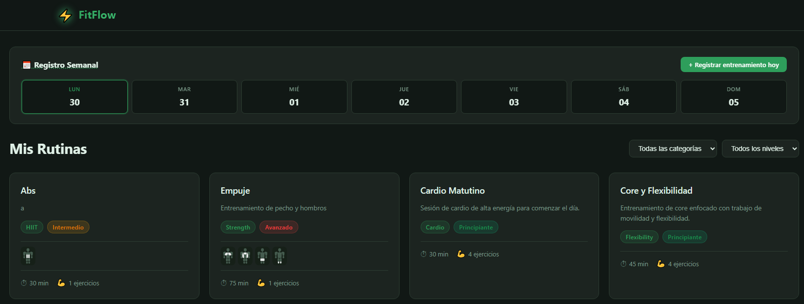

FitFlow
Aplicación web completa para gestión de rutinas de fitness. Diseñada para que los usuarios puedan organizar sus entrenamientos, registrar el progreso de pesos por ejercicio y visualizar su evolución mediante gráficos interactivos.

Sobre el proyecto _
FitFlow nació como proyecto personal para aprender desarrollo web full stack. La aplicación permite a cada usuario gestionar sus propias rutinas de entrenamiento de forma privada, con un sistema de autenticación JWT seguro y una interfaz limpia e intuitiva.
El panel de administración permite gestionar todos los usuarios y rutinas del sistema, pensado para un posible uso en entornos de entrenamiento personal o gimnasios.
Funcionalidades _
-
Autenticación JWT
Registro e inicio de sesión seguros con tokens de acceso y refresh tokens en cookies HttpOnly.
-
CRUD de rutinas y ejercicios
Crea, edita y elimina rutinas con sus ejercicios. Organiza sets, reps, descanso y peso.
-
Calendario semanal
Vista de calendario para planificar y registrar los días de entrenamiento completados.
-
Historial de pesos y gráficos
Registro del peso utilizado por ejercicio con visualización del progreso en gráficos Chart.js.
-
Panel de administración
Gestión de usuarios y rutinas con control de acceso por roles.